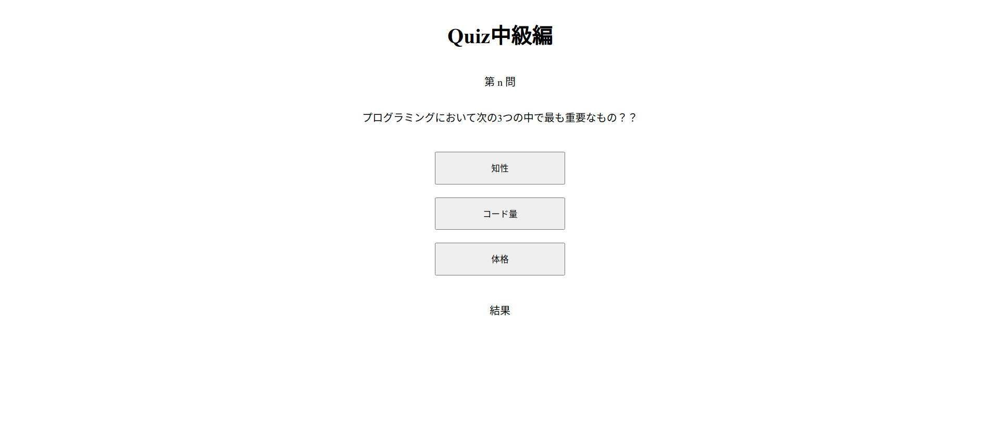

クイズアプリ中級
Quiz アプリ中級編の仕様
- ブラウザ上に問題と選択肢を表示．HTML には直接記述しない．
- 選択肢をクリックしたら正解かどうかを判定．
alert()で正解不正解を表示．ブラウザ上にも正解不正解を表示．- 問題数を 3 問にし，回答したら次の問題を表示．
↓ 画面を開くと問題が表示される．

↓ 適当なボタンをクリックすると正解不正解が表示される．問題文と選択肢が次のものに切り替わる．

必要な処理
読み込み時の処理
- 結果を記録する配列を準備する．
- 指定した場所に問題文を表示する．
- 各ボタンに選択肢を表示する．
- 各ボタンの
valueに選択肢の値を設定する．
選択肢クリック時の処理
- button タグの
valueの値を受け取る． - 正解の値と等しいかどうか判定する．
- 正解不正解を表示する．
- 正解不正解の結果を配列に追加する．
- 次の問題文と選択肢を表示する．
読み込み時の処理
HTML 要素
画面の HTML 要素は以下のようになっている．
<h1>Quiz中級編</h1>
<p>第 n 問</p>
<p id="question"></p>
<ul>
<li><button id="answer00">0</button></li>
<li><button id="answer01">1</button></li>
<li><button id="answer02">2</button></li>
</ul>
<p>結果</p>
<p id="result"></p>
JavaScript の処理 1（読み込み時）
- 結果を記録する配列を準備する．
- 空の配列を用意すれば OK．
- 指定した場所に問題文を表示する．
- 処理自体は初級編と同様．
- 問題が複数あるため，配列形式となっている点に注意．
- 結果記録用配列の
lengthを用いることで何問目なのかを指定することができる．
- 各ボタンに選択肢を表示する．
- こちらも初級編と同様．
- 何問目なのかの指定は問題文と同様．
- 各ボタンの
valueに選択肢の値を設定する．- 初級編と同様．
// quiz01.html
// ↓問題文（設定済み）
const quiz = [
{
question: "プログラミングにおいて次の3つの中で最も重要なもの？？",
answers: ["知性", "コード量", "体格"],
correct: 1,
},
{
question: "課題をつくるときに大事なことは？？",
answers: ["斬新なアイデア", "コミットする時間", "洗練されたコード"],
correct: 1,
},
{
question: "コードを書くことに疲れたときはどうするのがよいか．",
answers: ["温泉に浸かる", "ビールを飲む", "更にコードを書く"],
correct: 2,
},
];
// 1. 結果記録用の配列を用意
const result = [];
// 2. 問題文の表示
$("#question").text(quiz[result.length].question);
// 3. 選択肢の表示
$("#question").text(quiz[result.length].question);
$("#answer00").text(quiz[result.length].answers[0]);
$("#answer01").text(quiz[result.length].answers[1]);
$("#answer02").text(quiz[result.length].answers[2]);
// 4. `value`の設定
$("#answer00").val(0);
$("#answer01").val(1);
$("#answer02").val(2);
JavaScript の処理 2（正解不正解の判定と結果表示）
- button タグの
valueの値を受け取る．- 初級編と同様．
- 正解の値と等しいかどうか判定する．
- 初級編と同様．
- 正解不正解を表示する．
- 初級編と同様．
- 正解不正解の結果を配列に追加する．
push()で配列に値を追加することができる．
- 次の問題文と選択肢を表示する．
- 結果記録用配列の
lengthを使えッ！
- 結果記録用配列の
$("button").on("click", function (e) {
if (Number(e.target.value) === quiz[result.length].correct) {
$("#result").text("正解！！！");
// 結果を配列に追加
result.push("ok");
} else {
$("#result").text("不正解．．．");
// 結果を配列に追加
result.push("ng");
}
// 問題文と選択肢を更新
$("#question").text(quiz[result.length].question);
$("#answer00").text(quiz[result.length].answers[0]);
$("#answer01").text(quiz[result.length].answers[1]);
$("#answer02").text(quiz[result.length].answers[2]);
});
練習
クイズ中級編を実装しよう！
できた人は下記にもチャレンジ！
- 画面上の「第 n 問」に何問目かの数値を表示する．
- 3 問目終了時に終了の判定を行う．
- 問題を 6 問まで追加する．
- 終了時に正解数を表示する．
- 終了時に正答率を表示する．